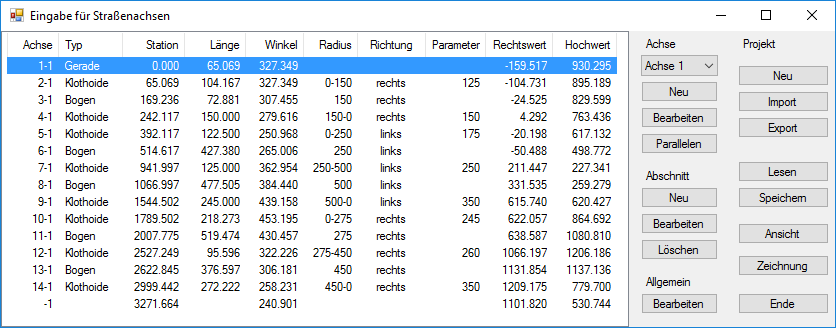

Erstellen eines Verkehrsweges (Trasse). Öffnet das Programm Eingabe für Straßenachsen.
Mit Hilfe des Trassierungs- und Absteckprogramms lassen sich Absteckdaten im Allgemeinen Konstruktionsprogramm umsetzen. Neben Daten aus CARD/1 können auch Daten aus alternativen Programmen verarbeitet werden. Dieses Zusatzprogramm generiert Geraden, Kreisbögen, Klothoiden, Blosskurven, Polynomialen sowie deren Parallelen. Im Allgemeinen Konstruktionsprogramm werden Kilometrierungsbezeichnungen inkl. tabellarischer Darstellung ausgegeben.

Achse
Erzeugen und Bearbeiten einer Hauptachse.
Dropdown-Liste (z. B.: Achse 1)
Falls Sie bereits Achsen erzeugt haben, können Sie aus der Liste die zu bearbeitende Achse auswählen. Wurde noch keine Achse erstellt, ist die Schaltfläche ausgegraut.
Neu
Erzeugt eine neue Achse. Öffnet den Dialog Eigenschaften für Achse (Startparameter).
Bearbeiten
Achsabschnitt bearbeiten. Öffnet den Dialog Eigenschaften für Achse (Startparameter). (s. oben).
Wählen Sie aus der Dropdown-Liste den entsprechenden Achsabschnitt und klicken Sie auf diese Schaltfläche, um den Abschnitt zu bearbeiten.
Parallelen
Öffnet den Dialog Parallelen und Stationstexte bearbeiten.
Abschnitt
Erzeugen und Bearbeiten eines Achsabschnittes.
Neu
Erzeugt einen neuen Achsabschnitt. Öffnet den Dialog Stationsabschnitt für... Wählen Sie im Dialog das entsprechende Trassierungselement und klicken Sie auf OK.
Bearbeiten
Öffnet den Dialog Achsabschnitt bearbeiten.
Löschen
Löscht den in der Tabelle markierten Achsabschnitt.
Allgemein
Bearbeiten
Öffnet den Dialog Allgemeine Grundwerte. Im Dialog können Sie Grundeinstellungen für die Darstellung und Eingabeeinheiten vornehmen.
Projekt
Neu
Schließt das aktuelle Projekt ohne Rückfrage zum Speichern und öffnet ein leeres Projekt.
Import
Fügt bereits vorhandene Dateien dem aktuellen Projekt hinzu. Die folgenden Formate werden unterstützt:
Dateien |
Formate |
Daten |
*.d50; *.d40; *.040 |
Karten |
*.k40 |
Achsen |
*.axn |
Export
Speichert die aktuellen Daten oder Karten. Öffnet den Dialog Speichern unter.
Lesen
Liest eine Projektdatei [*.axn] ein.
Speichern
Speichert das aktuelle Projekt in einer Achsen-Datei [*.axn]. Öffnet den Dialog Speichern unter.
Öffnet ein Fenster und zeigt eine Vorschau der definierten Haupt- und Abschnittsachsen. In einer Tabelle werden die vorhanden Hauptachsen mit den entsprechenden Stationen angezeigt. Passen Sie ggf. den Maßstab an, in dem die Trassierungselemente angezeigt werden, falls nach dem Öffnen des Fensters die Zeichnung zu groß oder zu klein dargestellt wird. (s. Allgemeine Grundwerte → Maßstab).
{kind=link}
Zeichnung
Ablegen der erstellten Trasse auf der ISBCAD Zeichenfläche. Öffnet den Dialog Speichen.
Geben Sie einen Dateinamen für die einzufügende Zeichnung ein und speichern Sie diese im *.akt.-Format ab, indem Sie auf Speichern klicken. Der Dialog wird geschlossen und das Trassierungsprogramm wird wieder hervorgehoben. Klicken Sie im Programm auf Ende, um dieses zu schließen und die Zeichnung ablegen zu können.
Sie werden nach dem Schließen des Trassierungsprogramms einen Rahmen mit den maximalen Abmessungen auf dem Bildschirm sehen, den Sie an die gewünschte Stelle schieben und mit der linken Maustaste ablegen können.
Ende
Schließt das Trassierungsprogramm ohne Rückfrage. Speichern bzw. exportieren Sie die aktuellen Daten, bevor Sie das Programm schließen.